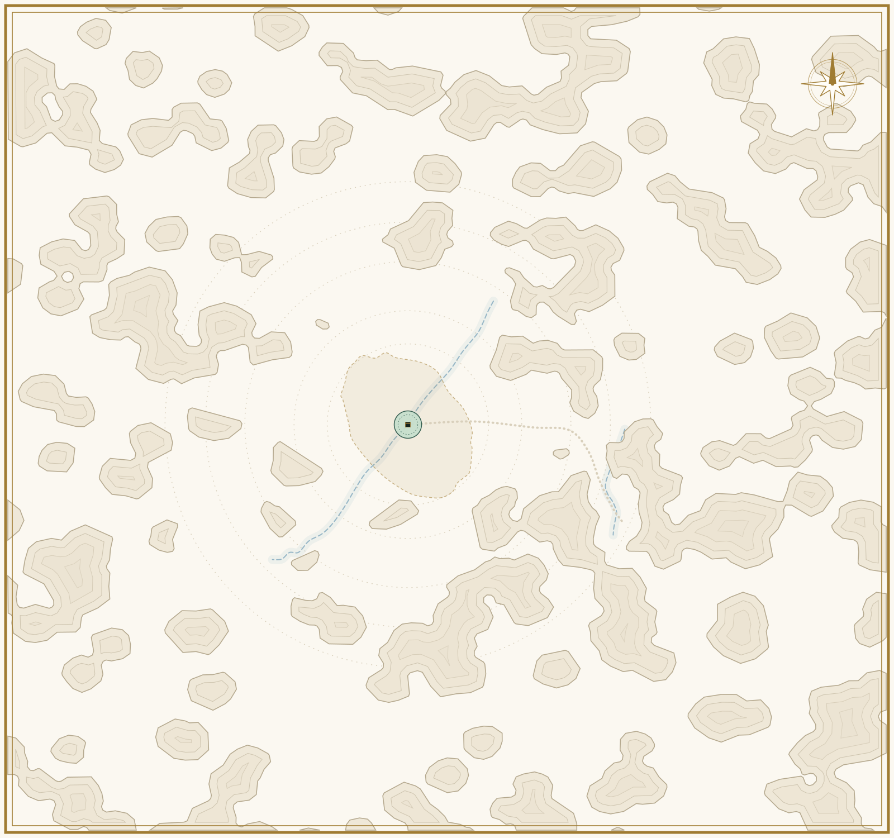

11
الكعبة
3
5
4
Region
مكة
السيرة النبوية · ٣٦ حدثًا
الكعبة
١١ حدثًا في هذا الموضع · بترتيب العمر
بناء الكعبة
عمره ٣٥ سنة
وضع الحجر الأسود
عمره ٣٥ سنة
الجهر بالدعوة
عمره ٤٣ سنة
[حدث عند الكعبة]
عمره ٤٤ سنة
إسلام حمزة
عمره ٤٦ سنة
الصحيفة
عمره ٤٧ سنة
عمرة القضاء
عمره ٥٩ سنة